Blynk.md
Table of Contents
Prerequisites
- Hardware is setup (TM4C hooked up to ESP8266 via UART)
- ESP8266 is flashed with latest firmware
- See section Updating ESP8266
Creating a Blynk Device
- Sign into Blynk
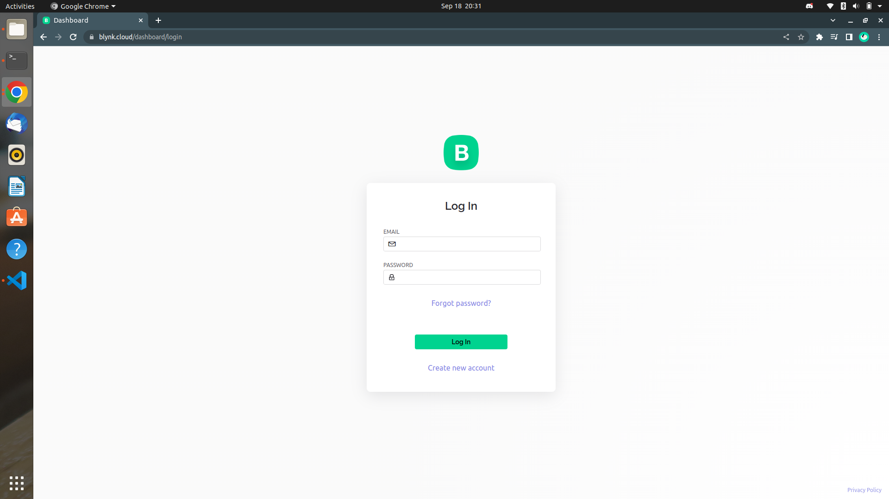
- Create a template for your device
- Click the
Template icon in the left taskbar
- Click the
+ New Template button in the top right corner of the screen
- Name your template
- Select
ESP8266 as the hardware
- Click
Done
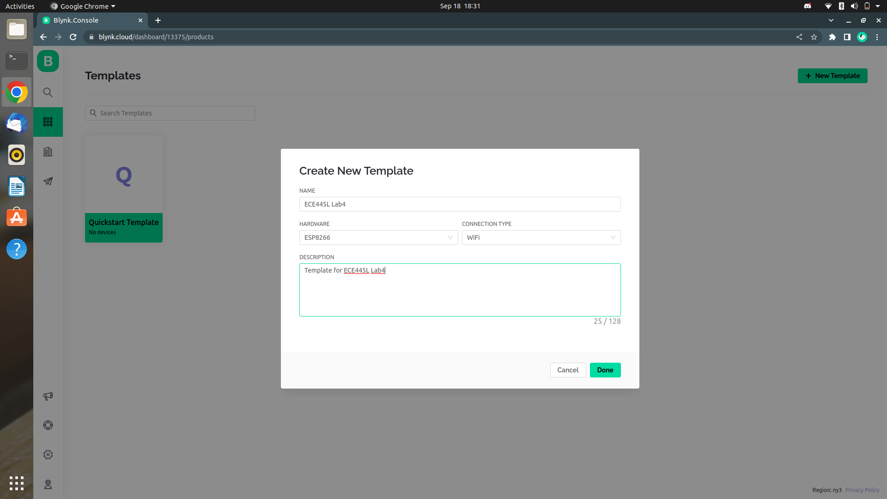
- Create datastreams for your widgets to connect to
- Click the
Datastreams tab at the top of the screen
- Click the
+ New Datastream button in the top right corner of the screen
- Name the datastream and select the virtual pin that it corresponds to
- Edit the rest of the datastream’s settings as you like
- Click
Create
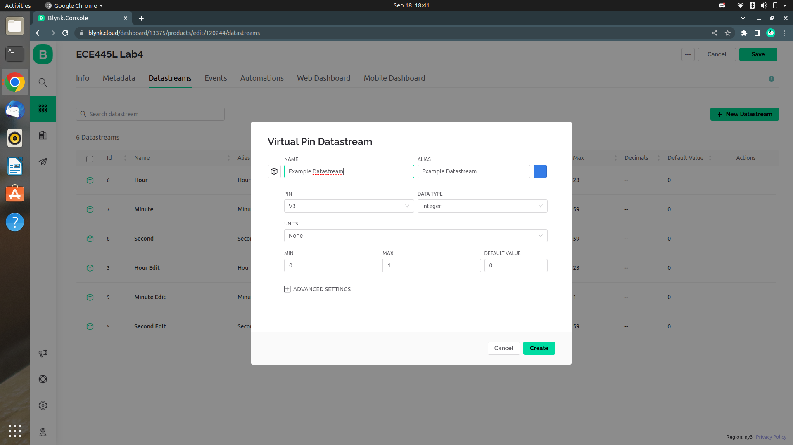
- Create a dashboard
- Click the
Datastreams tab at the top of the screen
- Drag widgets from the widget box on the left of the screen
- Click a widget’s
gear icon to edit it
- Name the widget and set its corresponding datastream
- Click
Save
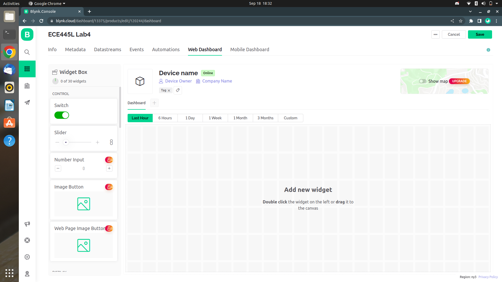
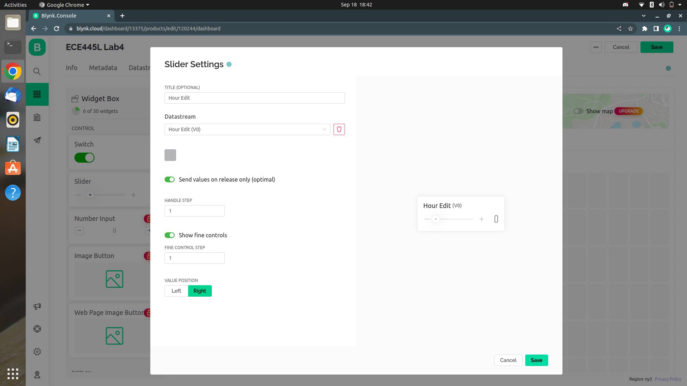
- Create a device
- Save the template you created by clicking the
Save button in the top right corner of the screen
- Click the
Search icon in the left taskbar
- Click the
+ New Device button in the top right corner of the screen
- Select the
From template option
- Select the template you created
- Name the device
- Copy the
BLYNK_AUTH_TOKEN from the top right corner of the screen
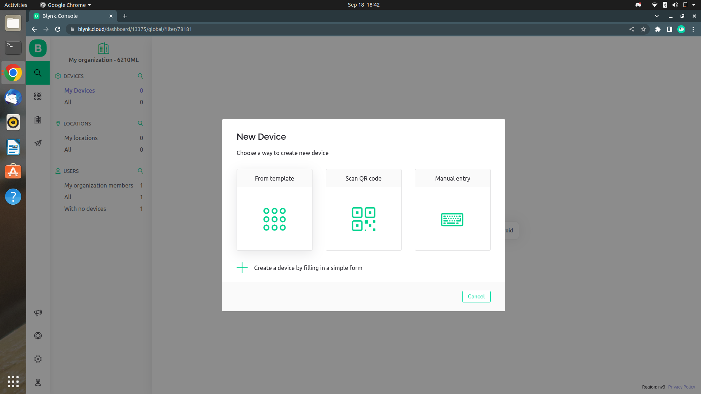
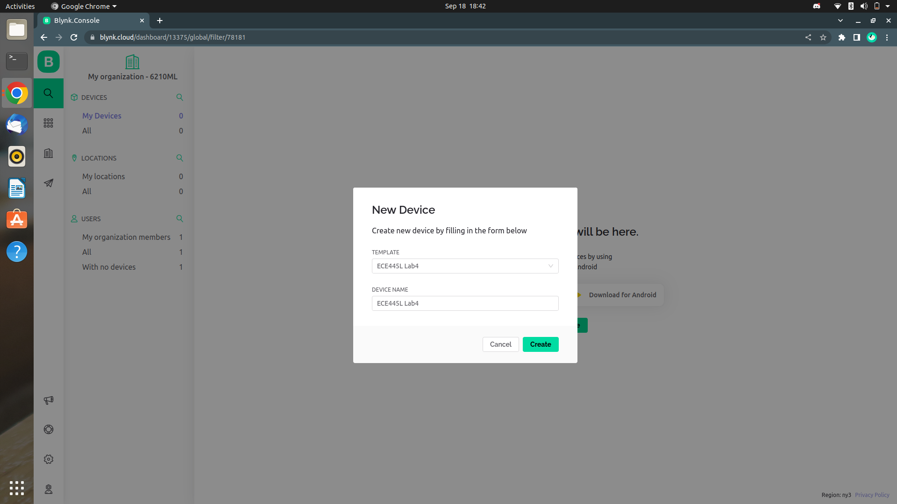
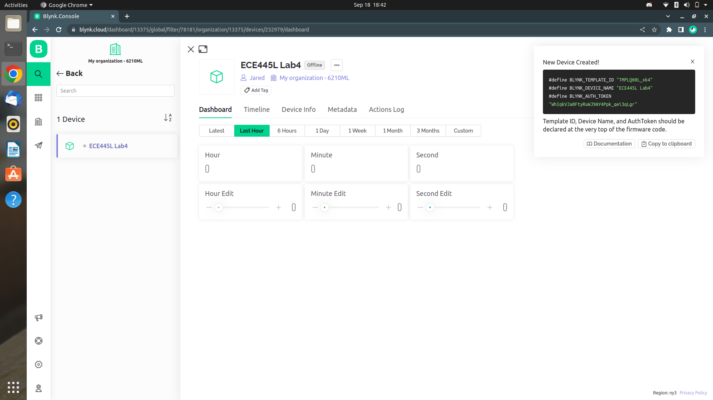
- Create a mobile dashboard
- Log into the mobile app
- Click the device that you created earlier
- Click the
wrench button in the top right corner of the screen to edit the dashboard
- Click the
+ button in the top right corner of the screen to add a widget
- Click the widget to edit it
- Name the widget and set its corresponding datastream
- Click the
X button in the top left corner to exit the editor
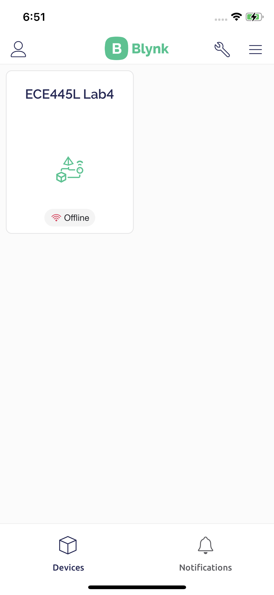
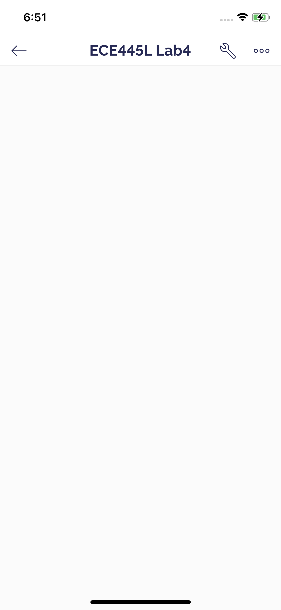
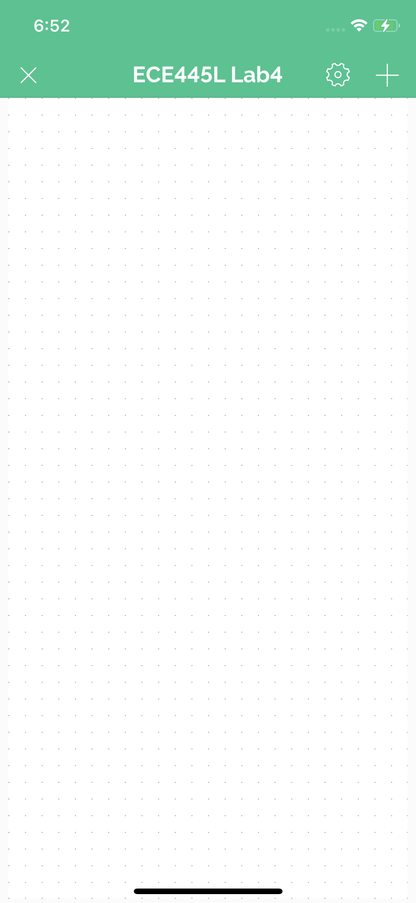
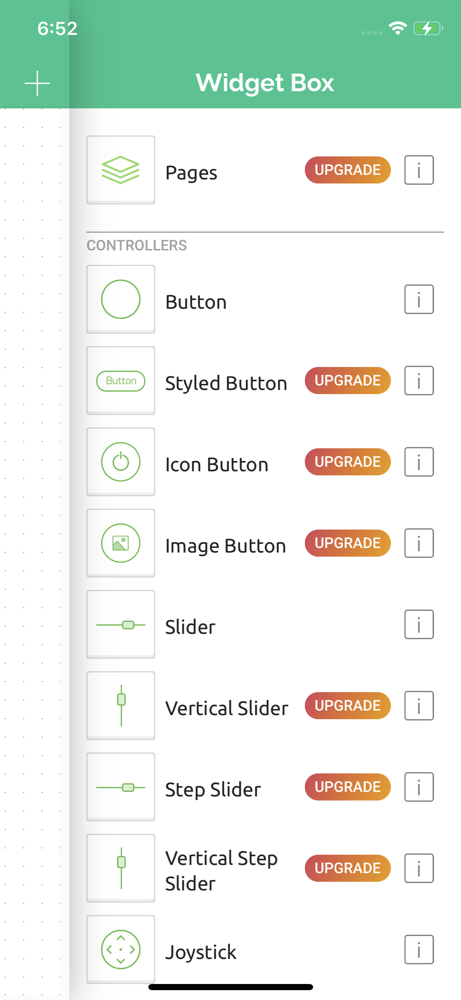
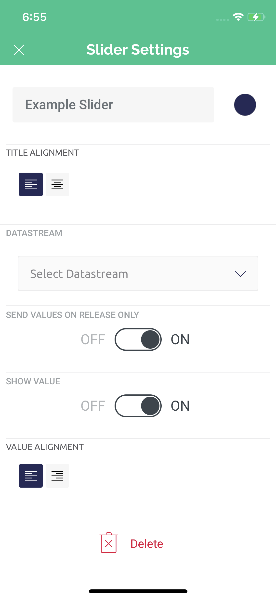
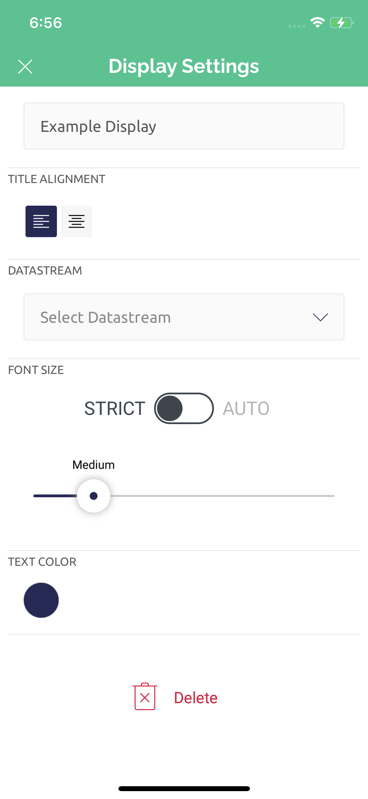
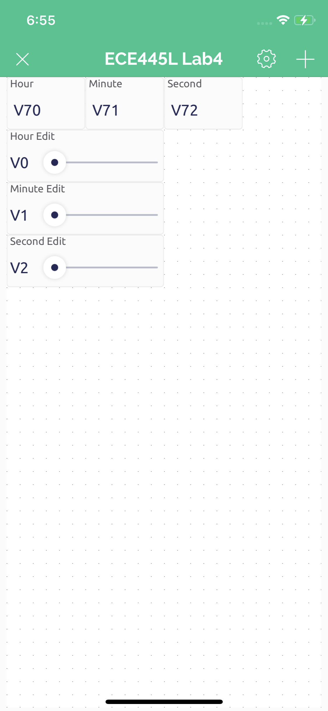
Connecting Blynk to the TM4C
- Create a Blynk device
- You are provided a BLYNK template ID, device name, and auth token
- Only need the auth token
- Use the blynk_init function call to pass in your auth token, SSID, and password to connect to Blynk!
- We suggest the SSID and PASS to correspond to the Lab IOT WiFi or a mobile hotspot
- Compile and flash program to TM4C
- If the HW is setup properly, then Blynk should say the device is online
Updating ESP8266
- Download the Arduino IDE
- Last tested version:
1.8.19
- Add ESP8266 indices to Arduino board manager URLs
https://arduino.esp8266.com/stable/package_esp8266com_index.json
File > Preferences > Additional Board Manager URLs:- Go to
Tools > Boards Manager
- Search for
esp8266
- Install
v3.0.2
- Add Blynk libraries
Tools > Manage Libraries...- Search for
blynk, install Blynk by Volodymyr Shymanskyy v1.1.0
- Change board to
esp8266
Tools > Board: "xxx" > ESP8266 Boards (3.0.2) > Generic ESP8266 Module
- Clone latest firmware
- Open up ESP_TM4C_Xfer_Rev_HandShake_NEW_BLYNK project
EE445L-F22-ESP8266-Blynk > ESP_TM4C_Xfer_Rev_HandShake_NEW_BLYNK > ESP_TM4C_Xfer_Rev_HandShake_NEW_BLYNK.ino
- Compile project (checkmark button)
- Select port to flash to
Tools > Port: "xxx"- Select open port, assuming only one USB device is currently connected
- Connect ESP8266 to ECE 445L ESP8266 flasher board (or similar UART-USB FTDI board)
- Upload using flash button (rightward facing arrow).